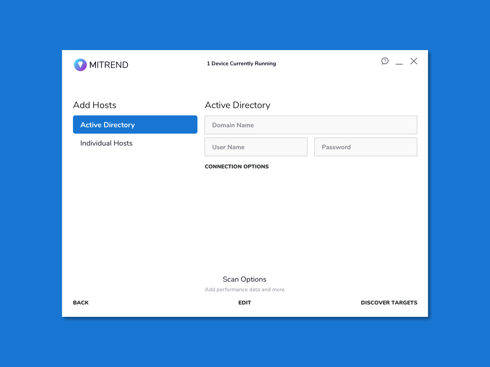

Mitrend

I was hired in 2013 as the principal creative to put a focus on our SaaS UX, UI, marketing, and branding as well as building out the creative team with new hires and team building and leadership. Over the past seven years we have greatly expanded the team, product, and reach of Mitrend.
My role and responsobilities included shaping company and product strategic direction by being a major stakeholder in sprint planning meetings and high level strategic discussions with the tech lead and CEO. Having such an intimate look into the decision making gave me valuable knowledge of not just what we wanted to accomplish, but also why we wanted it.

Mitrend used an agile development process that included sprint planning, bi-weekly sprints, and daily stand-ups. As the Lead Creative, I was responsible for sprint planning, leading creative process, and haveing hands on participation in the creation of the product designs. I was also the handoff to the development team to ensure that our designs and interactions were properly executed.
Our creative process included gathering the creative brief, brainstorming and sketcking, wireframing out prototypes, creating design comps and assets, and handing off to developers. We did this in tandem with constant reviews and critiques from various stakeholders (developers, CEO, etc.) and found success in this process.
Our SaaS platform included a file scanning desktop application, a web portal to organize and interact with the data gathered, interactive reports, branded powerpoints, and other custom reporting material for our users.
Our SaaS platform has over 10k+ users including multiple fortune 50 companies and drove $5b+ in revenue for our users.

Project Details
ClientMitrend
CategoryCreative Direction, Branding, UX Design, UI Design, Team Building, Creative Strategy
NotesSome copy and data is blured and anonymized for legal reasons.